Realism 4.2 — bằng chứng kiểm thử
Commit nguồn: 505cdfaf2eb09401b4921e2b121cc0600be97b62. CI và log kiểm thử.
Hồ 100 cá được ghi hơn 3 phút chạy thực, không kích hoạt hành vi bằng QA. Các clip cận cảnh dùng fixture QA để nhìn rõ hành vi. Kiểm thử trong Chromium dùng GPU phần mềm; chưa xác nhận 60 FPS trên PC và 30 FPS trên điện thoại thật.
Chuyển động và hành vi
Cá ông tiên — 15 giâyMổ kính — phát chậm 5 lầnNhảy qua mặt nước, một splash và trở lại hồ
So sánh vây mềm / cổ điển
angelfish
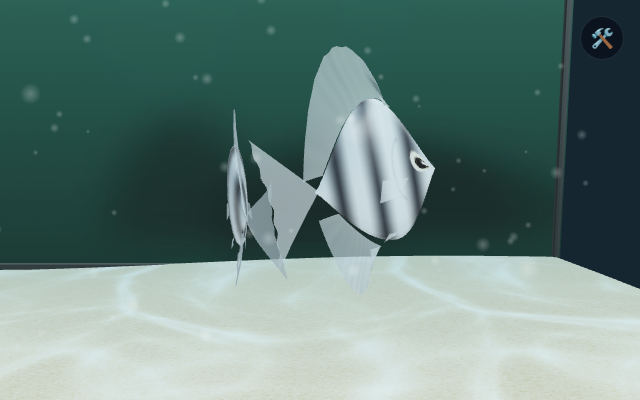
Vây mềm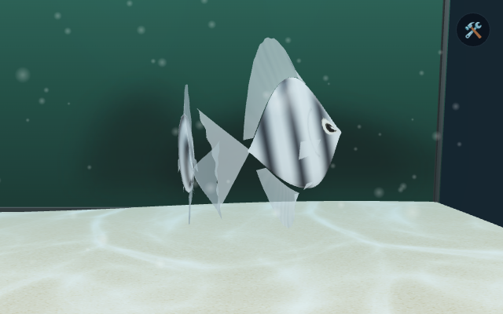
Vây cổ điển — cùng góc nhìnbetta
Vây mềm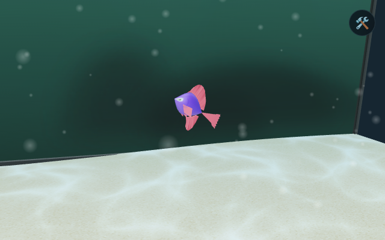
Vây cổ điển — cùng góc nhìn guppy
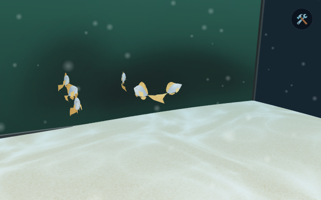
Vây mềm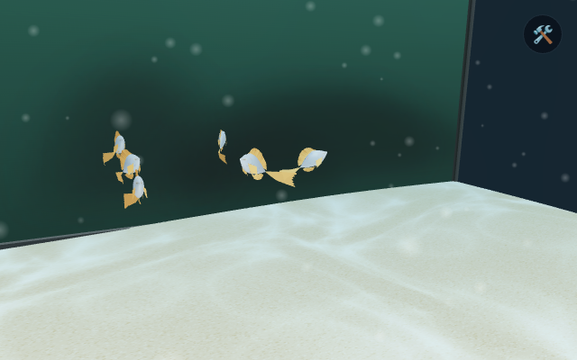
Vây cổ điển — cùng góc nhìnneon-tetra
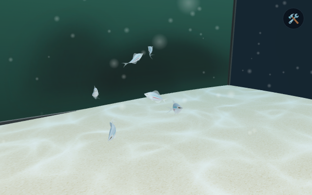
Vây mềm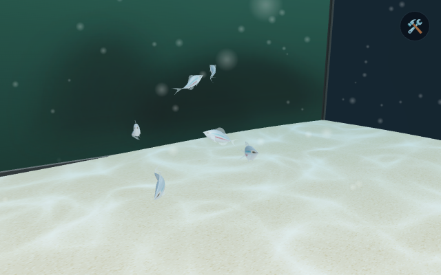
Vây cổ điển — cùng góc nhìncorydoras
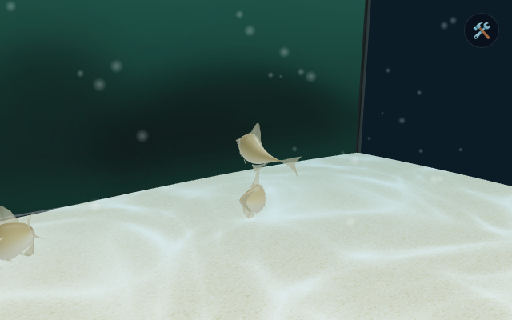
Vây mềm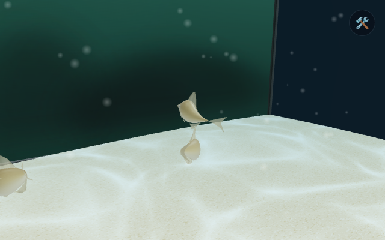
Vây cổ điển — cùng góc nhìnÔng tiên — góc nghiêng
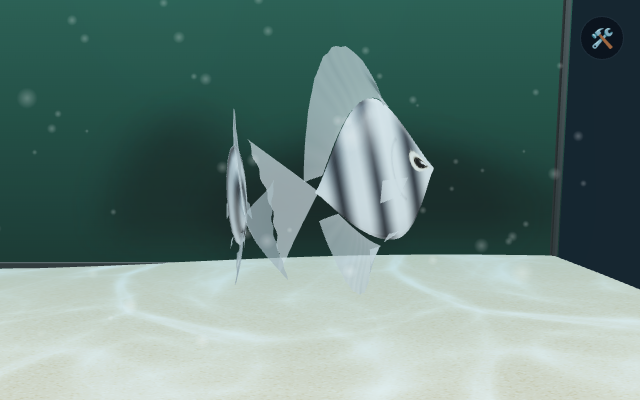
Vây mềm, góc nghiêng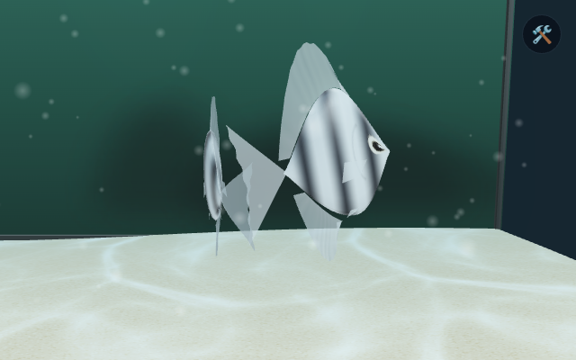
Vây cổ điển, góc nghiêngMàn hình dọc — pan/pinch hai ngón
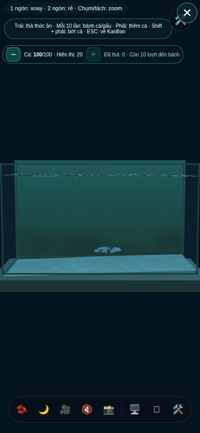
Trước thao tác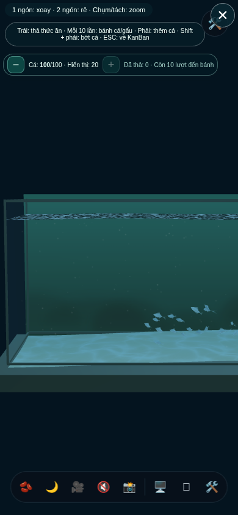
Sau thao tác — không thả thức ăn